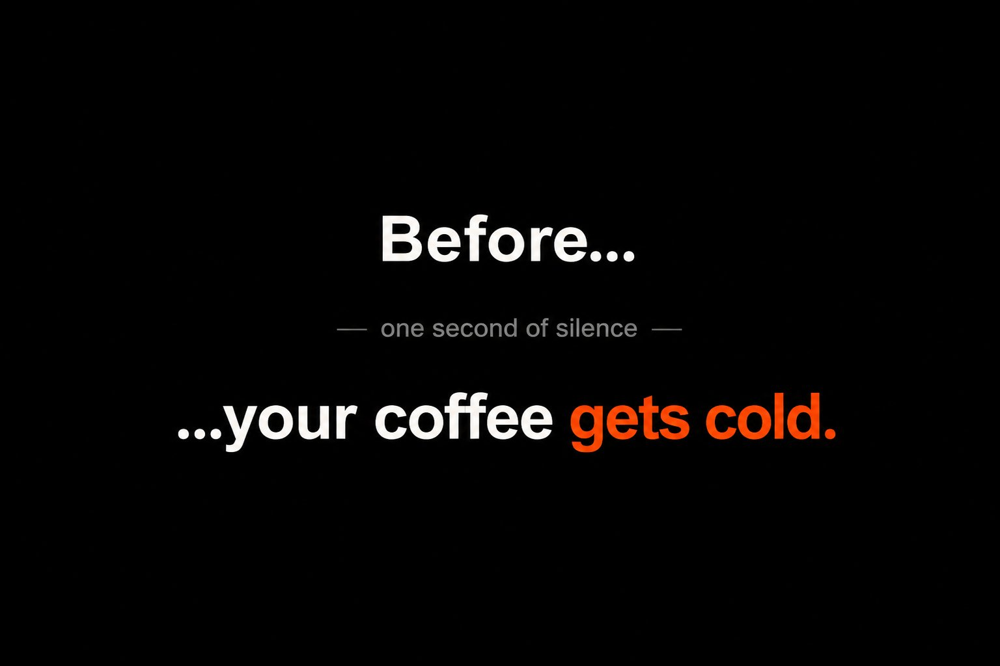
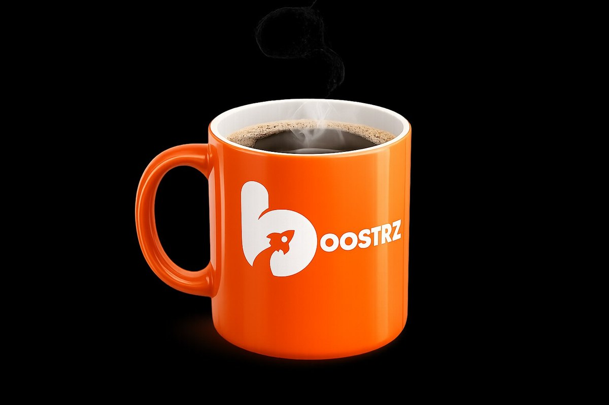
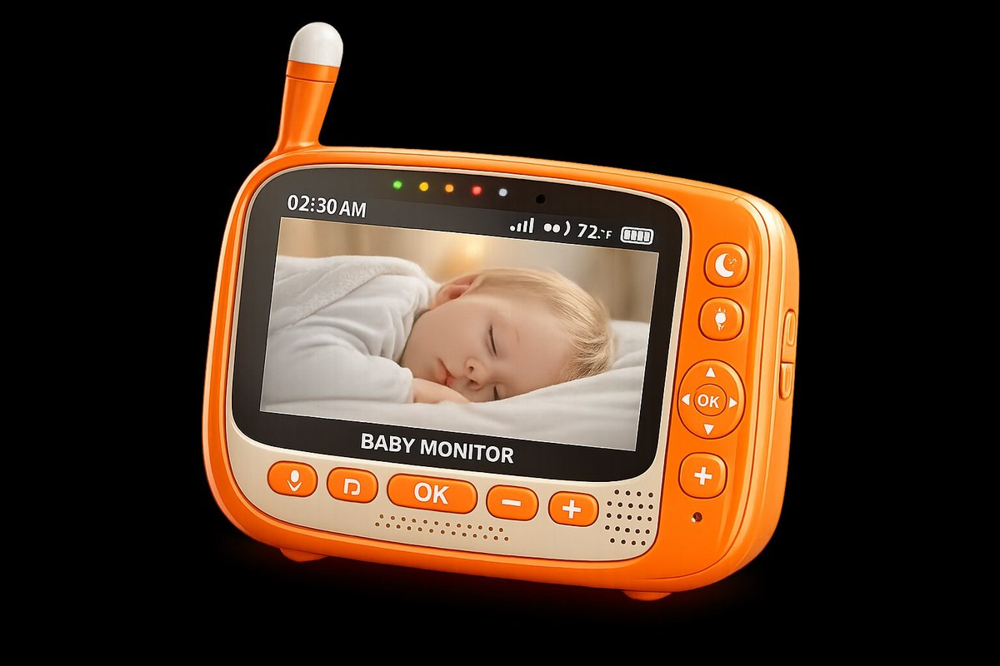

Campaign Bible — 2026
For the Reader
Boostrz lets any business owner add a referral campaign to their website in a few clicks — no developer, no integration project, no waiting on a technical team. This document is the bible for our launch campaign, “Before…” — a series of short, silent, live-action films, roughly fifteen seconds each, no voiceover. The campaign never says any of that out loud. It makes you feel it.
Start Here
Picture a small business owner. At a café, on her lunch break. She’s been told for years that referral marketing is something other people get to have — the kind with a developer, a budget, a meeting.
She opens her laptop. She’s a little nervous. She wants to set one up quietly — before anyone notices, before lunch is over, before she has to explain herself to anyone.
And then, before her coffee even gets cold… it’s done. Live on her site. And the first thing she wants to do is brag about it.
That feeling — the quiet thrill of beating the thing you braced for — is the entire campaign. Everything past this page is built to put an audience exactly where she is: inside the moment, before they ever evaluate the work.
01 — The Film
This is the founding execution — the coffee. Four beats, no voiceover, fifteen seconds. Read it as a cut, not a description: each frame is a shot, and the speed of the middle is the whole point.
We open inside the ritual. The mug is the campaign’s timer — steam at the start, warmth as the proof. The audience is in the moment before they know what they’re watching.
Shot Macro. Shallow focus. Diegetic sound only — ceramic, a faint exhale of steam.
Now we see them fully. Tabs closed. Focus music on. The body language of someone about to lift something heavy. The mug sits untouched beside them.
Shot Pull back to reveal. Natural window light. The world says: this will take a while.
Fast. Almost uncomfortably fast. A new tab, three clicks, a referral campaign live on their site. No bridge, no tutorial — the speed is the explanation. Done before the audience registers it happened.
Shot Tight on screen. Real product, real clicks. We see the “live” confirmation. A glimpse, not a demo.
It’s done. Sound falls away. A full beat of near-silence — the world holds its breath. Then they look directly into the camera. Still. Composed. The eye contact is the moment.
Shot Locked frame. Audio drops to room tone. Hold one beat longer than feels comfortable.
They reach for the coffee — and it catches them. Still burning hot. A small, dignified flinch, never a spit take. The warmth of the mug is the proof of how little time has passed.
Shot Cut to hand + mug. Micro-recoil. The steam from Hook 00 still rising. Then the words appear.

Reveal 05Two beats and one pause. The audience completes the sentence in their own head a fraction before the screen does. That’s not reading a tagline — that’s feeling it. (Full treatment on the next page.)
Shot Screen text on black. No voiceover. The silence does the work.
02 — The Reveal
Before… one second of silence …your coffee gets cold.The pause is not dead air. It is the moment the audience finishes the sentence themselves — a fraction before the words land. By the time the finish arrives, they are already there. No voiceover. Screen text only.
03 — The Franchise
The coffee names the campaign. But “Before…” is the architecture. Every execution swaps the anchor object and finishes the sentence differently — the four beats stay identical, the rhythm stays identical, the surprise is always new. Here are the first two, in the same world.


The anchor changes — ceramic and steam become plastic and a blinking LED — but the build underneath is the same machine:
They settle in for something hard. The anchor sits untouched.
Three clicks. Live. Faster than anyone expected.
A held beat. Then eye contact with the camera.
The anchor catches them. The proof of how little time passed.
By the third or fourth execution, audiences recognise the structure — and start finishing the sentence before the screen does. That is when a campaign becomes a franchise. The full library of anchors lives in the appendix.
04 — The Concept
Now the idea behind what you just watched. Before… rests on a single universal truth: we’ve been conditioned to believe that serious marketing infrastructure takes serious time. We prepare. We clear our schedule. We brace ourselves. We assume complexity.
The campaign never argues against that assumption. It simply outlives it — through a single person, a single time anchor, and a reveal that lands like a quiet, warm surprise.
No voiceover. No product explanation.
The audience figures out Boostrz themselves. That’s the point.
05 — What Boostrz Must Prove
The campaign exists to make a single product claim feel inevitable: a referral campaign can go live before the everyday moment you prepared for has even passed.
This is the contract every execution signs. Coffee. Baby monitor. Shower. Lunch. Each one is a stopwatch the campaign races — and beats. The reveal shows enough of the product moment — the three clicks, the “live” confirmation — that the speed is seen, not just claimed.
The product is fast.
Not magical.
06 — The Tone
The humour is never at the audience’s expense. Our person is not foolish for preparing — they are completely reasonable. The world taught them to expect complexity; they were right to brace. Boostrz is simply faster than the world taught them to expect. The recoil is not embarrassment. It is the most human possible response to a pleasant surprise.
Amused by the gap between expectation and reality — never superior to it.
The recoil is a flinch, not a spit take. The character stays dignified in the surprise.
No voiceover ever. The screen text and the silence do all the work.
A real person in a real moment. Not performing. Just living it.
07 — Visual Rules
The campaign survives only if every execution looks and feels like the same world. These are the production rules every partner, vendor, and AI tool follows. No exceptions.
Orange Anchor Object
Every execution features an everyday object cast in Boostrz orange (#FF5125). The object is the brand presence in the frame. No logos on screen until the reveal.
Realistic Lighting
Natural, soft, photographic. Window light, lamp light, screen glow. No animation, illustration, or cartoon styling. The campaign lives in the real world.
One Person In Frame
No group shots. No families. No busy environments. One person, one moment, one anchor. The intimacy is the campaign.
Time Signal Visible
When natural, the time of day appears in the world — the clock on the monitor, the sunrise, the steam still rising. The moment is anchored, not narrated.
Anchor Centered
In the opening hook, the anchor dominates the frame. Composition leads the eye there. The audience meets the object before the person.
No Exaggerated Comedy
No spit takes. No slapstick. No mugging for the camera. Reactions are quiet, dignified, human. The humour is in the situation, never the performance.
08 — Brand Positioning
This campaign speaks directly to the non-technical business owner who always assumed referral marketing wasn’t for someone like them. Too complex. Too expensive. Too dependent on developers. Boostrz doesn’t argue with that assumption. It outlives it.
Primary Audience
What This Campaign Never Says
Appendix A — Open Production Note
Held here, out of the pitch, until resolved. Flagged, not hidden.
Appendix B — The Scene Library
Every execution opens with the two hooks and ends with the anchor recoil and the two-beat reveal. The scenario in between is what changes.
Anchor — Coffee mug, steam rising beside a laptop
Beat 1 — Brace
Home office. Dual monitors. Notepad open. Headphones on. Deep breath. This is going to take a while.
Beat 2 — Work
Boostrz opens. Three clicks. Live before the headphones were even adjusted.
Beat 3 — Silence
They stare at the screen. Pull the headphones off slowly. Look into the camera.
Beat 4 — Recoil
They reach for the coffee. A small recoil. Still burning hot.
Anchor — Baby monitor on the nightstand, LED blinking in the dark
Beat 1 — Brace
Dark bedroom. A mom places the monitor on the nightstand, careful. She sits on the edge of the bed. This is her window. She knows it won’t last.
Beat 2 — Work
The laptop glows against her face. Boostrz. Three clicks. Live. The monitor blinks. The house is still silent.
Beat 3 — Silence
She looks at the screen. Then the monitor. Then the camera. A quiet exhale. She did it.
Beat 4 — Recoil
The monitor crackles. A small sound from the other room. She closes the laptop gently. Almost a smile.
Anchor — Coffee mug beside a monitor covered in sticky notes
Beat 1 — Brace
Monitor full of project names and deadlines. They’re adding a new one: “Referral Campaign — ask dev team.” They pause. Reconsider. Open a new tab instead.
Beat 2 — Work
Boostrz. Three clicks. Live. No dev team. No sticky note required.
Beat 3 — Silence
They peel the sticky note off slowly. Crumple it. Look into the camera.
Beat 4 — Recoil
They reach for the coffee. Flinch. Still hot.
Anchor — Coffee mug, 5:43am clock, baby monitor silent on the desk
Beat 1 — Brace
5:43am. The house is quiet. This is the window. They settle in, glance at the monitor. Maybe twenty minutes.
Beat 2 — Work
Boostrz. Three clicks. Done. They didn’t even need the twenty minutes.
Beat 3 — Silence
They look at the monitor. Still silent. Then the camera.
Beat 4 — Recoil
The monitor crackles. A small sound from the other room. Eyes widen slightly.
Anchor — Coffee mug, shower running audibly in the background
Beat 1 — Brace
Kitchen table. Laptop open. Shower warming up in the other room. Something to fill the wait.
Beat 2 — Work
Boostrz. Three clicks. Done. The shower is still warming up.
Beat 3 — Silence
They close the laptop. Look into the camera.
Beat 4 — Recoil
They walk to the bathroom. Test the water. Still cold. A small flinch.
Anchor — The front door, a food delivery app, a living room couch
Beat 1 — Brace
They glance at the door, then the delivery tracker — barely moved. They sit on the couch. Open the laptop. Might as well use the time.
Beat 2 — Work
Boostrz. Three clicks. Live. The delivery car on screen hasn’t moved.
Beat 3 — Silence
They look at the screen, then the door, then the camera. They weren’t expecting to be done this fast.
Beat 4 — Smile
The doorbell rings. A genuine smile — at the timing of it all. They close the laptop. Lunch is here.
A Campaign Bible by Boostrz Inc. — Confidential — 2026